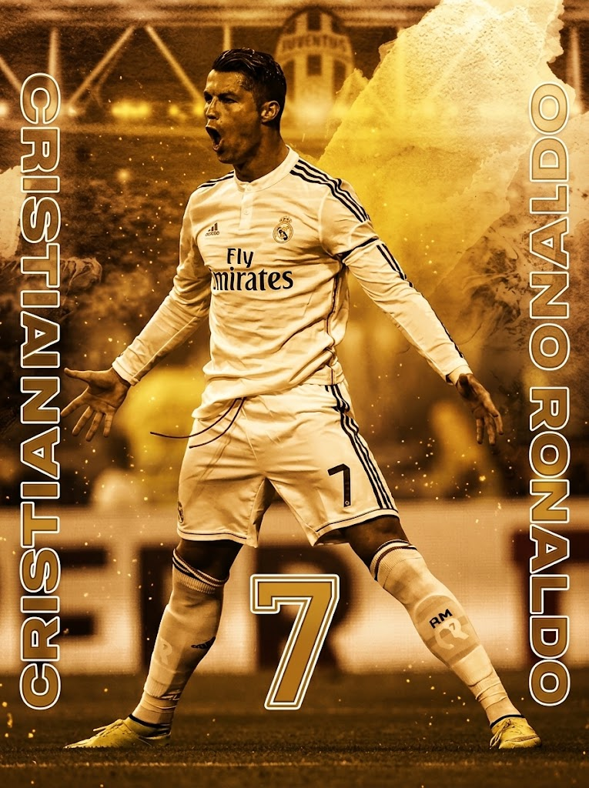

THE LEGENDARY FOOTBALL ICON & ALL-TIME TOP SCORER

คริสเตียโน โรนัลโด (CR7) หนึ่งในผู้เล่นที่ยิ่งใหญ่ที่สุดในประวัติศาสตร์ฟุตบอลโลก เจ้าของรางวัลบาลงดอร์ 5 สมัย และผู้ทำประตูมากที่สุดตลอดกาลในการแข่งขันทางการ
| Year | Club |
|---|---|
| 2002 - 2003 | Sporting CP |
| 2003 - 2009 / 2021 - 2022 | Manchester United |
| 2009 - 2018 | Real Madrid |
| 2018 - 2021 | Juventus |
| 2023 - Present | Al-Nassr |